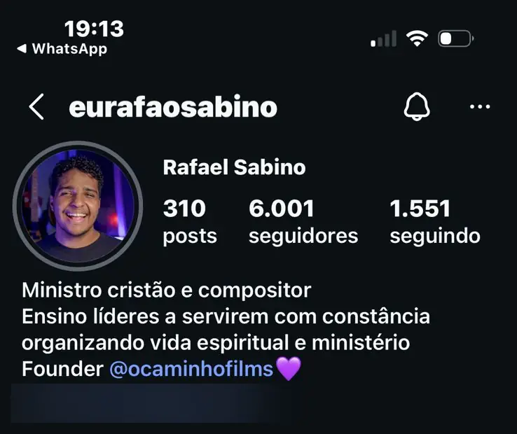
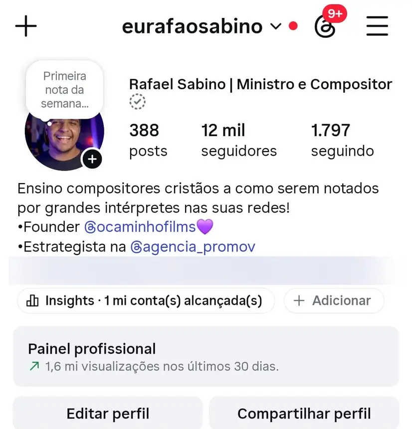
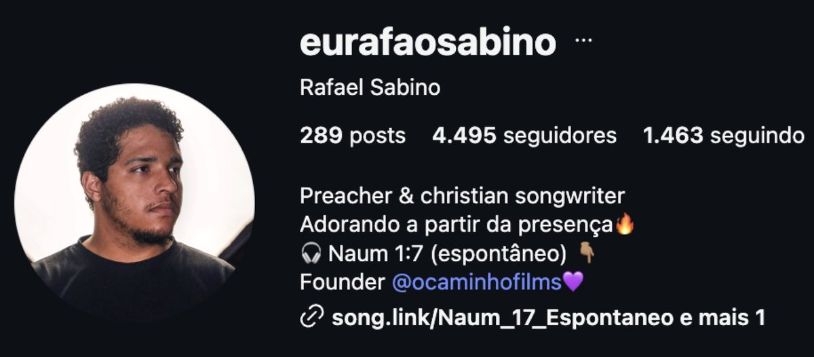
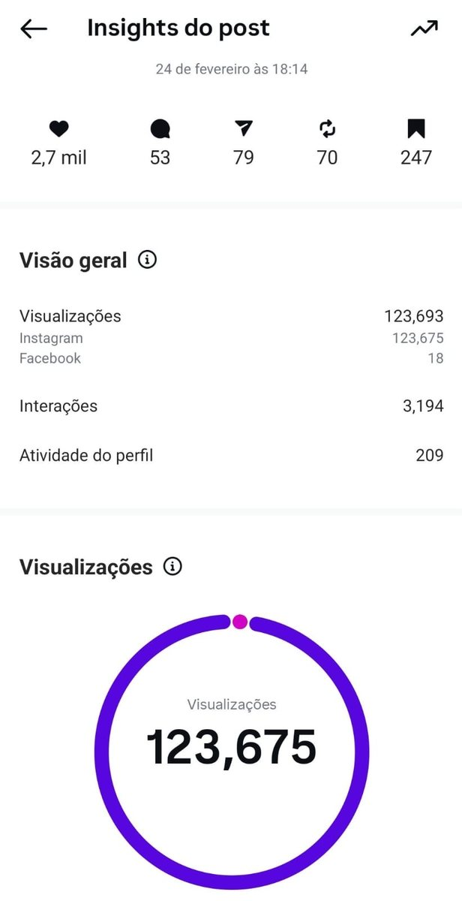

Resultado

Rafa Sabino
@eurafaosabino
adoração
De 3.056 a 18,3 mil seguidores
3.056 → 18,3 mil seguidores
1,5 milhão de visualizações nos conteúdos
Começou na Spark como mentorado: de 6 mil (fev) para 12 mil seguidores (jul), carrosséis de 300 mil, 562 mil e 821 mil visualizações e 1,6 milhão de alcance em 30 dias. Teo Hayashi, Luiza Possi, Adhemar de Campos e Ana Paula Valadão passaram a interagir com ele.
Antes e hoje

Os prints



